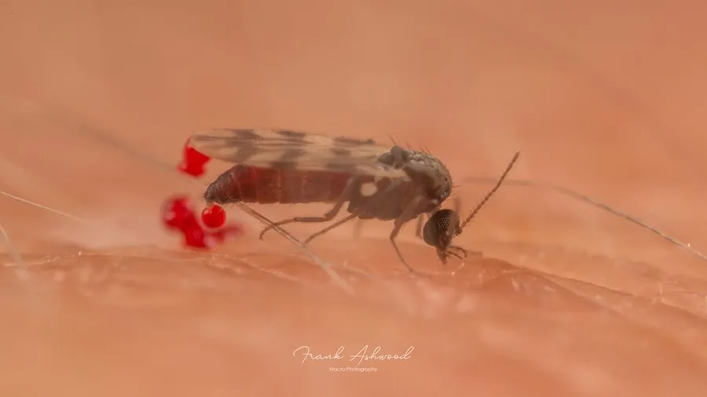

昆虫 · 动物界
库蠓 Culicoides puncticollis

体长仅一至二毫米的微小蠓类，翅面有暗斑，雌蠓吸血，可传播蓝舌病等畜禽病毒病。
- 分类
- 门节肢动物门纲昆虫纲目双翅目科蠓科属库蠓属
- 栖息环境
- 潮湿腐殖土、水边淤泥、树洞积水与畜舍周围
- 地理分布
- 中国南北各地及古北界广大地区
- 保护级别
- 常见吸血蠓类，无保护需求
物种志
库蠓的成虫体长仅一至二毫米，比蚊子小得多，体灰黑或褐色，翅面常有暗色斑纹，停歇时两翅平叠在背上，形成一个菱形的小剪影，很容易被误认作小蛾。触角细长，口器短小但能刺破皮肤。雌蠓吸血，雄蠓只吸花蜜。它的飞行声音极细，常被人忽视，叮咬后却会留下成片红痒的小包。
它分布于中国南北各地以及古北界广大地区，幼虫生活在潮湿的腐殖土、水边淤泥和树洞积水中。成虫在夏秋的清晨和傍晚活动，雄蠓常成群在树梢或屋檐下飞舞，雌蠓追逐牲畜和人吸血，可传播蓝舌病、非洲马瘟等畜禽病毒病。它以幼虫或蛹越冬，一年发生多代。防治关键是清除潮湿腐殖质和积水，畜舍加装细目纱网，必要时进行空间喷雾。
形态与习性
- 体长仅一至二毫米，比蚊子小
- 翅翅面有暗斑，停歇时平叠成菱形
- 吸血仅雌蠓吸血，雄蠓吸花蜜
- 孳生潮湿腐殖土、淤泥与树洞积水
- 传播蓝舌病、非洲马瘟等病毒病
- 防治清除潮湿腐殖质，畜舍加细纱网
趣味知识
- 它小到能穿过普通纱窗，被咬时几乎感觉不到，事后才发现一片红包。
- 雄蠓在屋檐下成群上下飞舞，那团小黑点往往就是它们。
- 蓝舌病在羊群中流行，常常就是这种不起眼的小蠓在传播病毒。